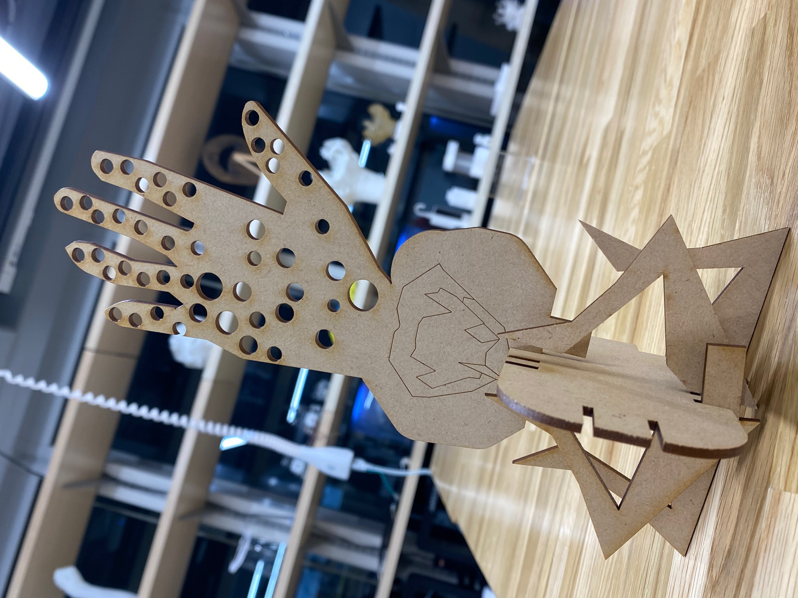
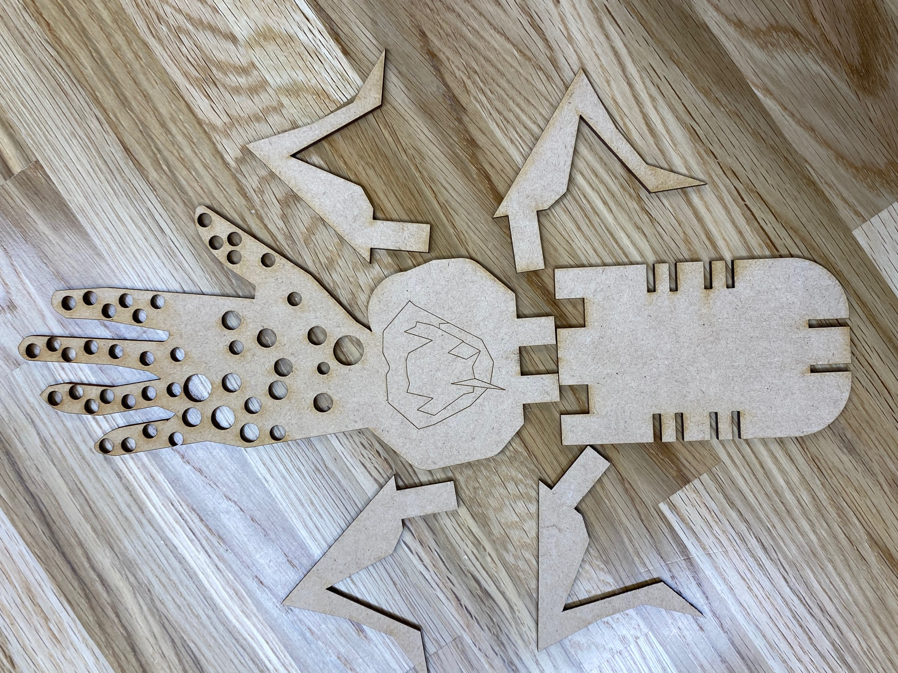
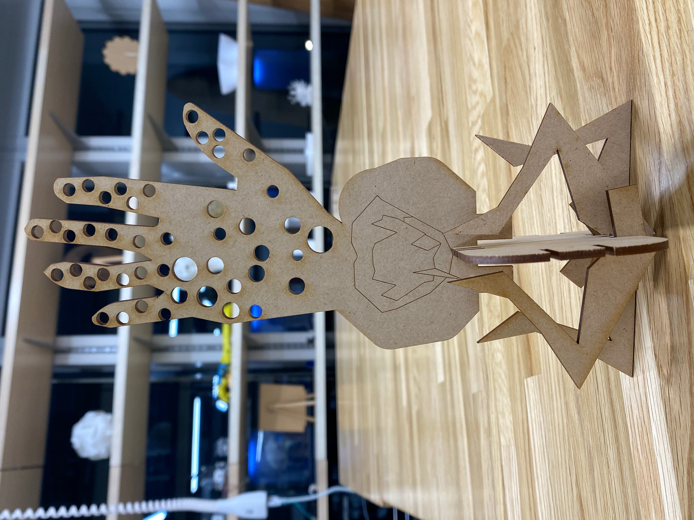

第三回
レーザーカッティングで作ったモノ
私は本能に訴えかけるものとして「気持ち悪い」と「怖い」を選びました。
実際にはもう一組足がついていたのですが、レーザーカッティングに上手く認識されていなかったらしく、
途中で切れてしまったので、四本になっています。

ばらけさせるとこんな感じになります。

想定していた形とは違うものになりましたが、「気持ち悪い」はしっかりと表現することができたと思います。
